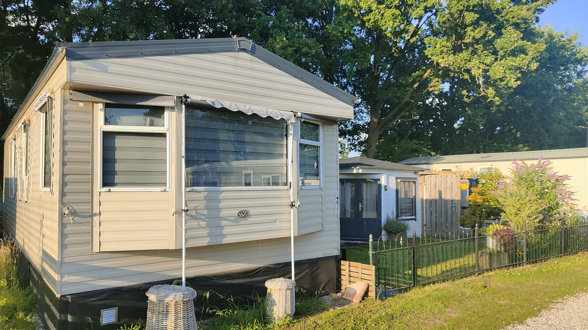

Stacaravan te huur op
'de Mölnhöfte'
in Diepenheim

De stacaravan
Onze stacaravan is van vele gemakken voorzien en ligt op een mooie plek.
Het is geschikt voor 4 personen. Meest geschikt voor 2 volwassenen en max. 2 kinderen.
Hieronder per ruimte de kenmerken en foto's op een rijtje:
Woonruimte
- Heerlijke (lounge)bank met fijne kussens
- Eethoek met 4 stoelen, mogelijkheid tot bijzetten van een 5e stoel of kinderstoel (op aanvraag)
- Mogelijkheid van televisie kijken via aangesloten pc. Heeft u een digitale televisie, dan kunt u inloggen op uw eigen account en op de computer televisie kijken. In plaats van een computerscherm is er een televisiescherm gekoppeld aan de computer. Het televisiescherm is te draaien naar alle kanten.


Keuken
- Keuken met gasstel, kleine airfryer/oven, magnetron, 2 mini-waterkokers (op gewenste temperatuur te zetten) en senseo-apparaat
- Grote koel-vriescombinatie met 3 grote vriesvakken


Slaapkamers
- Slaapkamer 1: tweepersoonsbed 140x200, 1 nachtkasje en 1 plankje, beide kanten een stroompunt, kast met legplanken.


- Slaapkamer 2: 2 bedden van 70x170 of 1 bed van 70x170 + campingbedje (op aanvraag), kast met hangmogelijkheid, 2 kastjes met legplanken, stevige plank te gebruiken als bureau of aankleedplek voor een jonge baby.


- Elektrische verwarming in de 2 slaapkamers d.m.v. een knop en petroleumkachel voor woonruimte (wel ventileren)
- Blokhut is alleen voor privégebruik.
Badkamer
- Wc en douche aanwezig, douchen bij voorkeur niet in de caravan maar (gratis) in één van de sanitairgebouwen (eentje op ong. 40 m loopafstand open vanaf Pinksteren tot einde zomervakantie)


Buiten
- Overdekte en afgesloten fietsenplek voor tenminste 2 fietsen met stopcontact voor opladen
- Overkapping van 5 bij 3 meter met grote lounge en eethoek met in hoogte verstelbare tafel, in opstelling naar keuze te zetten.
- Parkeerplek op eigen terrein
- Omheinde tuin met grasveldje
- Gratis gebruik van zwembad (vanaf ong. Pinksteren tot september geopend) en andere faciliteiten van de camping
- Tafeltennissetje, badmintonmateriaal, stoeprandjes, ballen, bord- en kaartspellen, boeken


Deze website is gemaakt door Annegreet de Graaf, augustus 2025